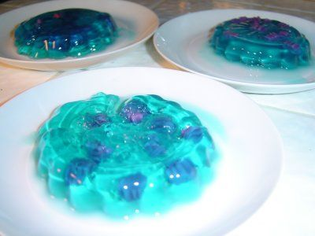

Huourgtzel-Gleuuurffz
Description
A popular dessert, this dish is like citrus pudding with every known berry flavored tofu
balls floating inside. Its brilliant blue hue comes from the use of gleurts, a "baztul"
(a species somwhere between an animal and a vegetable) from the planet "Blourltle". Blourltlians
tend to eat it on their equivalent of earth's holidays, but don't let that stop you from
trying it out at your next party!
Ingredients
- 2 cups of blue gleurts
- 4 cups of water
- 1 tbsp kukuurix powder
- 2 tbsp tarx powder
- 1.5 cups plrubus seeds
- 1 cup huourgtzel syrup (fresh squeezed is best!)
- 2 cups of purple huourgtzels, chopped to your desired size
- Optional: Sugar, if the traditional Andromedan way is too tart for your human liking
Steps
- Begin by placing the gleurts in the water to soak, for at least 6 hours. You may want to
leave them overnight for best results - however, do not leave longer than a day as they
can hatch if left in water too long (hatched gleruts are poisonous (and also venomous!)).
- After the gleurts have lost their color in the water, it should be smoking nicely and have taken
on a bright blue hue. Pour the water slowly through a sive into a large bowl, collecting all of
the gleurts in the sive. Be sure to dispose of the gleurts properly so that they do not hatch
in your local water supply.
- Add the kukuurix powder, the tarx powder, and the plrubus seeds. You should notice a thickening
of the mixture right away - the seeds are fast acting and will dissolve, but it is imperative you
do not touch them while they are working. Wait 10 minutes (15 may be better if your seeds are older,
as they get more deadly with age), then gently shake the bowl to allow the mix to begin to coagulate
well and for the kukuurix and tarx flavors to permeate the gelatinous mixture.
- Now that it's taken on a Jello-like look, gently drizzle on the huourgtzel syrup and allow it to
soak into the form. This should take a few minutes, but the gleuuurffz should take on an even brighter
blue hue from being fed the syrup, and will become more complacent about your next steps.
- Taking your chopped huourgtzels, gently push them one at a time into the body of the gleuuurffz. DO NOT
push more than one in at a time - this will enrage the gleuuurffz, and cause it to turn a level of sour
that the human mind cannot comprehend. Try to spread the huourgtzels out evenly, so that when biting into the
gleuuurffz later, you do not end up with parts that are overfilled or empty of their spongey texture.
- The gleuuurffz is now ready to serve - using the sharpest knife you have, cut it into several pieces, even
if you are only planning to eat one right now (this is done to afford the gleuuurffz as little pain as
possible). If the piece tastes too sour, you may add human sugar to the top.
Return Home